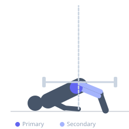
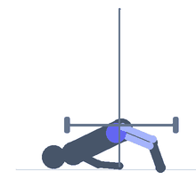

Exercise guide / Banded Hip Thrust
Banded Hip Thrust
A hip thrust exercise performed with a resistance band loop placed across the hips instead of a barbell. The band provides increasing resistance toward the top of the movement where the glutes are most capable of producing force, making it a highly effective tool for glute activation and home training.
Primary muscles
gluteus maximus
gluteus medius
Secondary muscles
biceps femoris long head
rectus femoris
Stabilizers
transverse abdominis
Equipment
Resistance Band (Loop / Mini Band)
Flat Bench


Starting position
- Sit with your upper back against a flat bench. Place a resistance band loop across your hips, anchored under both feet. Feet flat on the floor.
Setup
- Sit on the floor with upper back on a bench. Thread a resistance band loop under both feet and over the hips.
Steps
- Step 1: Drive through both heels to thrust the hips upward.
- Step 2: Extend the hips fully at the top, squeezing the glutes hard.
- Step 3: Hold for a moment at the top.
- Step 4: Lower the hips back toward the floor under control.
Coaching cues
- Full extension at the top
- Squeeze and hold the glutes
Breathing
- Exhale on the drive up. Inhale on the descent.
Range of motion
- Full hip extension at the top — body forms a straight line from knees to shoulders.
Tempo
- 2-1-2-0
Common mistakes
- Hyperextending the lumbar spine at the top
- Not fully extending the hips at the top
Safety
- Chin stays tucked — do not hyperextend the neck at lockout
Training
- hypertrophy: 8–15 reps
- endurance: 15–25 reps
- hypertrophy: 3–4 sets
- endurance: 2–3 sets
- Rest: {'hypertrophy': 90, 'endurance': 45}